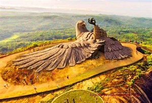
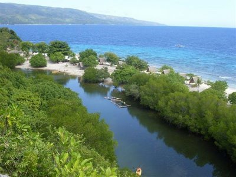

Kollam
Jatayu Park

Jatayu
atayu Earth Center, also known as Jatayu Nature Park or Jatayu Rock, is a park and tourism centre at Chadayamangalam in Kollam district of Kerala. It stands at an altitude of 350m (1200ft) above the mean sea level.
Jatayu Nature Park holds the distinction of having the world’s largest bird sculpture, which is of Jatayu.[2]
The sculpture measures (200 feet (61 m) long, 150 feet (46 m) wide, 70 feet (21 m) in height and occupies 15,000 square feet (1,400 m2) of floor area). It was sculpted by Rajiv Anchal. [3][4]
This rock-theme nature park was the first Public–private partnership tourism initiative in the state of Kerala under the BOT model. The park is about 38 km (24 mi) away from the city of Kollam and 46 km (29 mi) away from the state capital, Thiruvananthapuram.
Jatayu is respected all over the country. He has a powerful contribution in the great epic Ramayana. He is known as a noble bird of divine origin. The Jatayu Nature Park is now opened for commoners as well. It is located in Chadayamangalam in Kollam, Kerala. It took 2 years to work on the project. It is one of those places who earned popularity. The park is located on a hill-top in Kollam district in Kerala. No special transportation is required to get into the park, however visitors are required to use a cable car to reach the top of the park. Visitors intending to enter the park must obtain a paid ticket. Tourists may only bring cameras, and no bags are allowed.
Sasthamkotta Lake

Queen of Lakes
Sasthamcotta Lake or Sasthamkotta Lake, also categorized as a wetland, is the largest fresh water lake in Kerala, a state of India on the south of the West Coast. The lake is named after the ancient Sastha temple (a pilgrimage centre) located on its bank. It meets the drinking water needs of half million people of the Quilon district and also provides fishing resources. The purity of the lake water for drinking use is attributed to the presence of large population of larva called cavaborus that consumes bacteria in the lake water.[2] The lake is a designated wetland of international importance under the Ramsar Convention since November 2002.Being called the 'Queen of Lakes' is no small distinction, but a visit to Sasthamkotta in Kollam district helps you understand the moniker. The largest freshwater lake in Kerala, it has always been a hotbed for tourist activity.
Flanked by magnificent hills on three sides, this area is also home to one among Kerala’s most important pilgrimage sites, the ancient Sastha Temple. One can find friendly monkeys on its premises that are considered divine entities by the locals. Dedicated to both Lord Ganesha and Lord Ayyappa, the monkeys are believed to be the faithful entourage of the ruling deity, the Dharmasastha.People love coming and feeding the beautiful animals, along with soaking in the spiritual ambience of the entire place.Sasthamkotta or Sasthamcotta is a village in the Kunnathoor Tehsil of Kollam district in the state of Kerala, India.